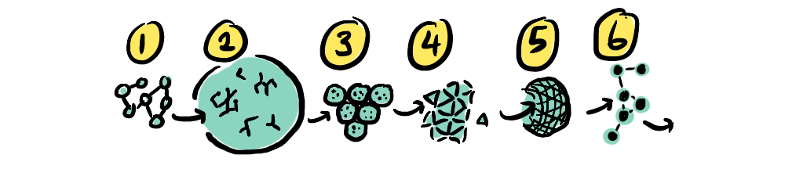
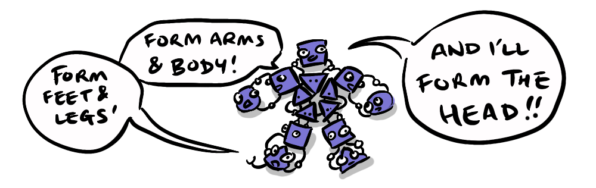
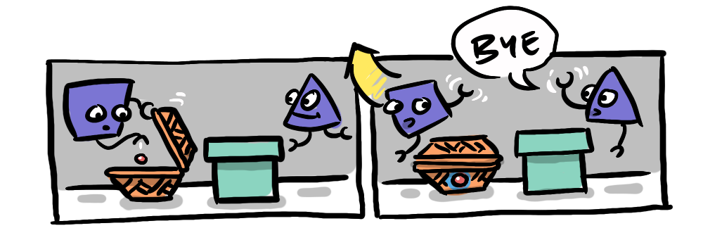
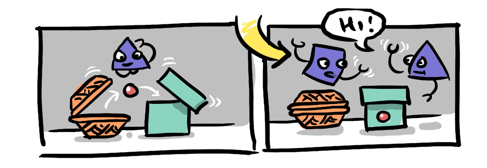
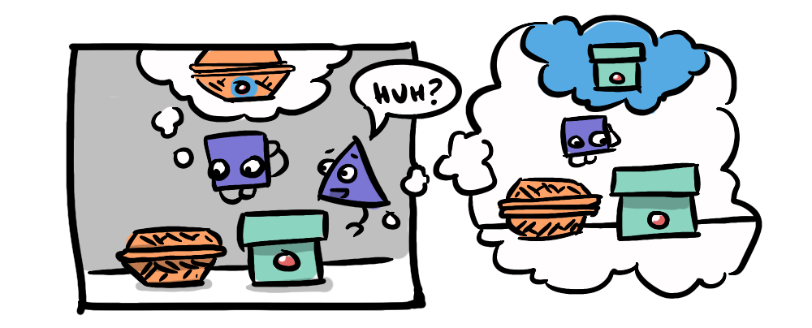
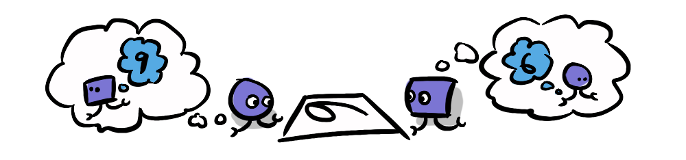
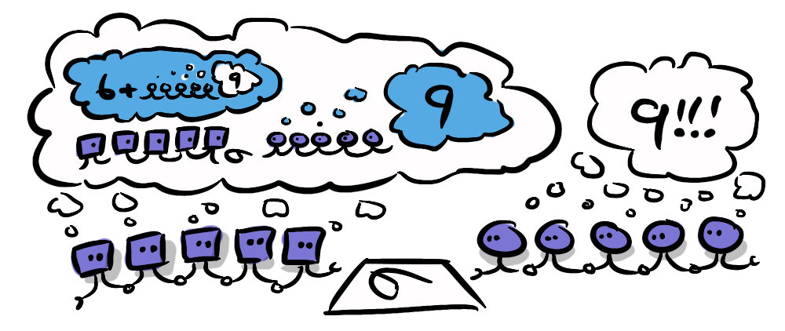

Emmett Shear, former CEO of Twitch and, for the brief period while Sam Altman was oustered, interim CEO of OpenAI, is now CEO of AI alignment at the startup Softmax. But he is not just your garden variety serial entrepreneur. As evidenced in his interview with Liv Boeree, Emmett Shear is a philosopher for the AI age. He makes some original, and I think prescient points about the current state of humanity.
The focus of his alignment research has shifted from LLMs to multi-agent systems, where alignment between agents precedes intelligence, in a hope that we can create artificial intelligence that is inherently aligned.

His statement that humans are alignment generators seemed to be a direct challenge to the position I put forward in The Alignment Problem No One Is Talking About; my position being that humans need to get aligned with each other if we have any hope of creating aligned AI. And yet, despite this, his position instantly resonated with me. He revealed that my desire for alignment across humanity, is a deeply human desire.
Humans not only cooperate with each other, but also create alignment across species, we domesticate pets (from dogs & cats to lions, tarantulas and pythons... with varying levels of success). We have throughout history enlisted beasts of burden—horses, oxen, even carrier pigeons, and continue to exploit animals for food, which requires some coordination with those animals. What allows us to do all this, with animals that are often larger, stronger and faster than us, is our ability to cooperate with our fellow humans to become more powerful and capable than the sum of our members.

But isn't it more our superior intelligence that allows us to outsmart other species? Surely, this is more about cunning and strategy than friendship? Yes. Intelligence plays a role, but not in isolation. The relationship between human intelligence and cooperation is interdependent and developed through iteration. Human intelligence has evolved in a social environment that leveraged cooperation.
Our ability to recognise the interests of others—known as 'Theory of Mind'—is a defining human characteristic, and one we see develop in humans predictably between the ages of 2-5 years.

The Sally-Anne test is used to determine 'Theory of Mind' development in children: a child observes a scene with two dolls, Sally and Anne, and some props; a basket, a box, and a marble. Sally places the marble in her basket then leaves the room. While Sally is away, Anne moves the marble from the basket to the box.

When Sally returns the child is asked "Where will Sally look for the marble?".

A child who has yet to develop 'Theory of Mind' will be unable to divorce Sally's perspective from her own, so will assume that Sally will look in the box—because the child knows the marble is in the box. But a child who has developed 'Theory of Mind' will recognise that Sally doesn't have access to information they do, and doesn't know that the marble has been switched, so will correctly conclude that Sally would incorrectly look in the basket for the marble.
This capacity is not necessarily binary—as we grow we can develop a stronger theory of mind which we might understand as emotional intelligence.

Emmett Shear posits that 'Theory of Mind' extends beyond individuals to a "Theory of other groups of minds". Human groups have to contend, and cooperate, with other groups. We have seen humans struggle with understanding other groups through our early forays into anthropology, where colonial social scientists attempted to see themselves through the eyes of indigenous populations (again with varying success*). We can see the balancing of demographic interests and identity politics in the modern day, we recognise that whole groups can have a unified perspective that is nonetheless at least partially unique and distinct from that of other groups. An extended theory of mind enables us to put ourselves in another group's shoes, and understand that social norms and moral frameworks are somewhat plastic.

This is a double-edged sword that allows us to accommodate for and even cooperate with our neighbours, but it also allows us to "know our enemy".
In the next part of this second alignment series, we will explore the dark side of cooperation and how it can amplify misalignment with other groups. We will then return to the idea of the dividual and see what that perspective yields for the future of alignment. We will ask "what is at stake?" through the meta-crisis considering how to avoid societal collapse, and finally how we can use distributed systems and the capacity of the natural alliance of everyone else against powerful defectors in the future.
Buckle up! It's going to get a lot worse before it gets better!